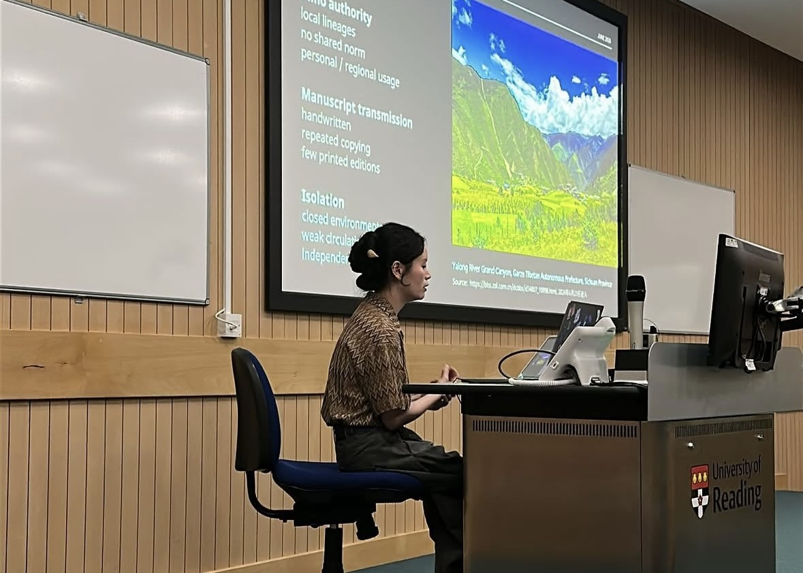
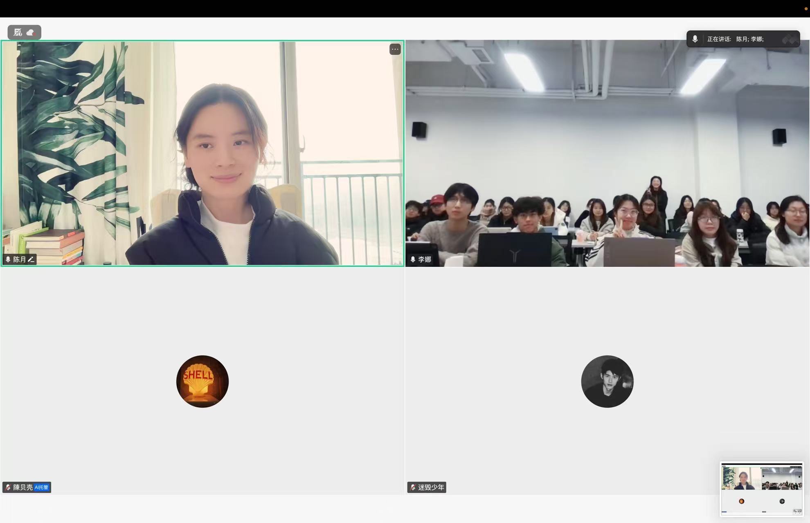
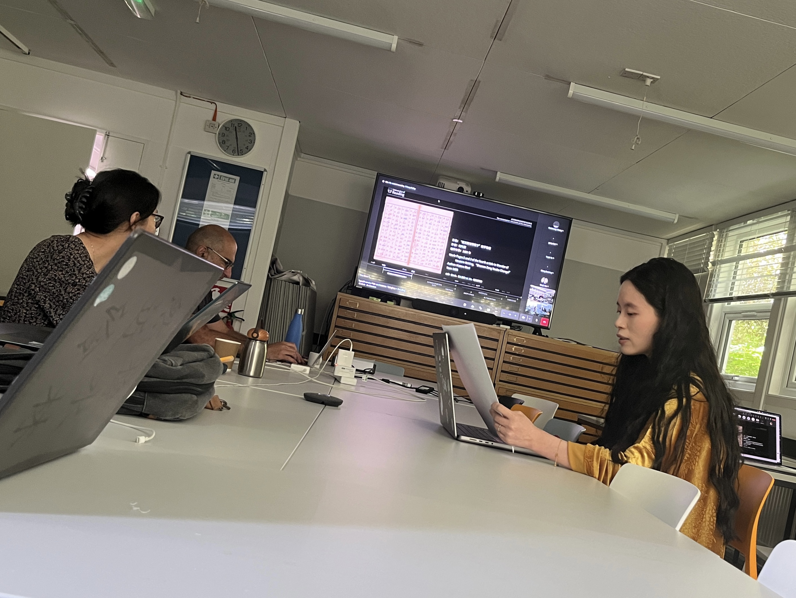
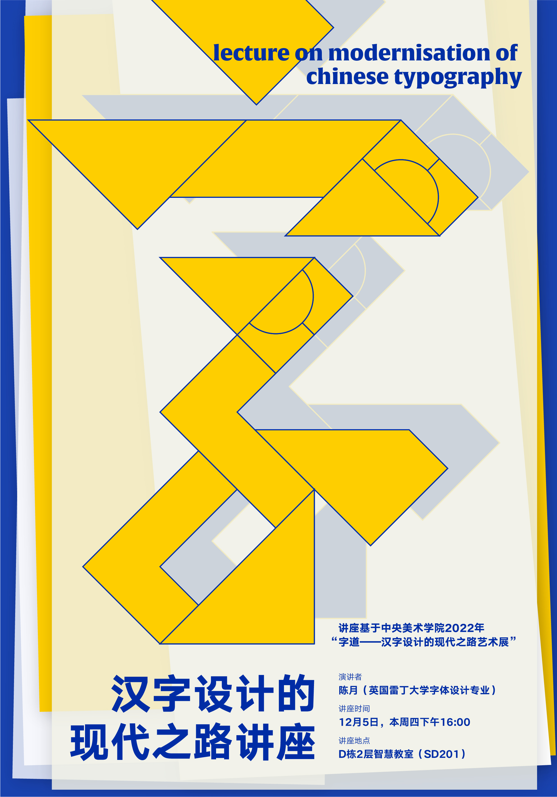

Conference Presentation会议报告
/gʁafematik/ 2026
Establishing comparable writing units in a non-unified writing system: a grapholinguistic approach based on ideographic Yi
在非统一文字系统中建立可比较书写单位：基于表意彝文的字符学方法
View details查看详情Activities活动

Conference Presentation会议报告
Establishing comparable writing units in a non-unified writing system: a grapholinguistic approach based on ideographic Yi
在非统一文字系统中建立可比较书写单位：基于表意彝文的字符学方法
View details查看详情
Conference Presentation会议报告
From Fragmentation to Belonging: The Development and Standardization of the Yi Script in Southwest China
从分裂走向归属：中国西南彝文的发展与规范化
View details查看详情
Conference Presentation会议报告
Participatory Visuality in Yi Script: Minority Writing and Cultural Engagement in China
彝文的参与式视觉性：中国少数民族文字与文化参与
View details查看详情
Course Lecture课程讲座
Western Typeface Design
西文字体设计

Academic Forum学术论坛
The Development of Hanyu Pinyin and Its Application Challenges in Type Design
汉语拼音的发展及其在字体设计中的应用挑战
View details查看详情
Conference Presentation会议报告
The Story of Pinyin
拼音的故事
View details查看详情
Lecture讲座
The Modern Path of Chinese Character Design
汉字设计的现代之路

Cultural Event Talk文化活动讲座
The Story of Yi Script
彝文的故事
View details查看详情
Academic Symposium学术研讨会
Typography Design in Oracle-Bone Picture Books
甲骨文绘本中的字体设计